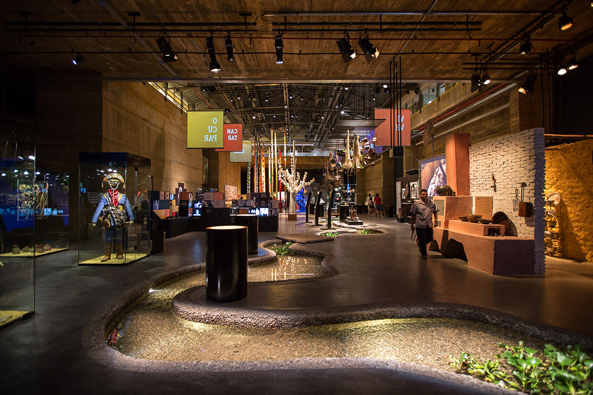
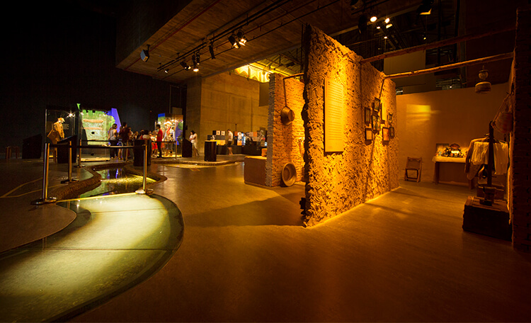
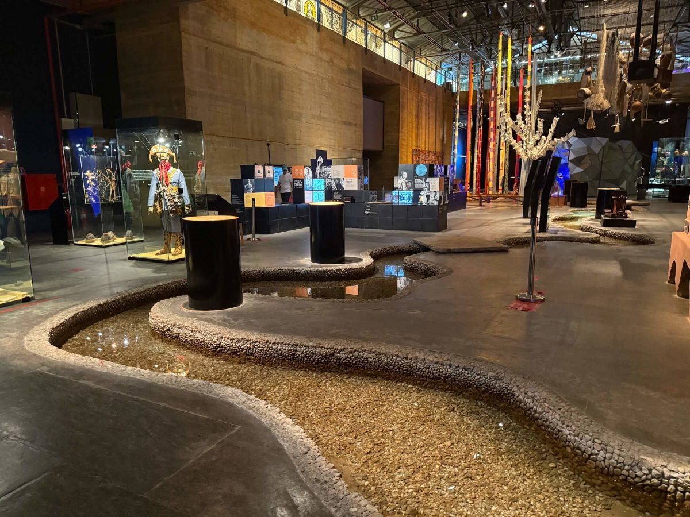
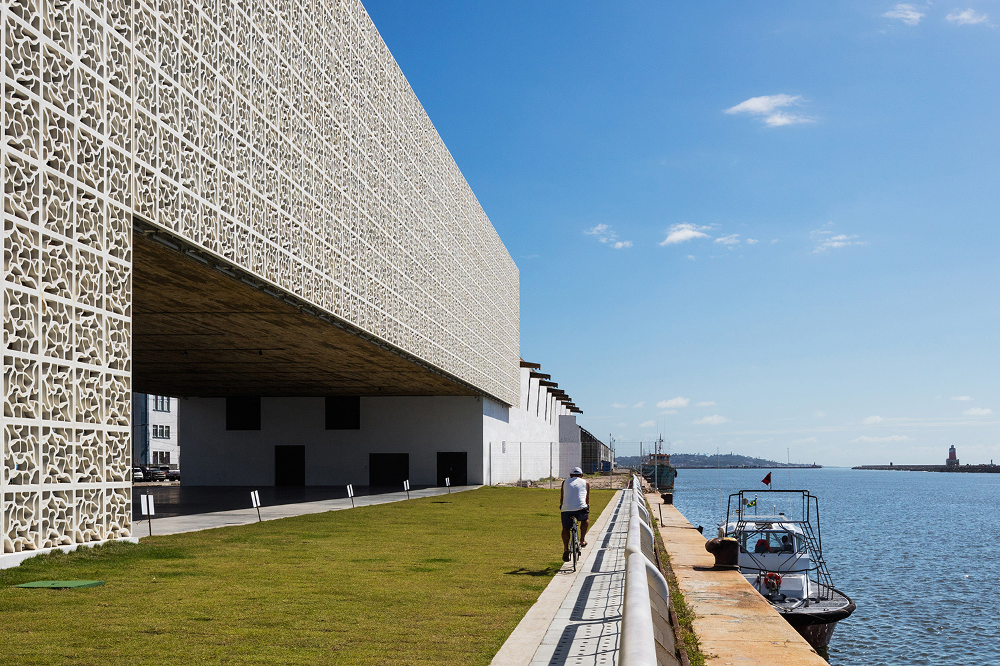
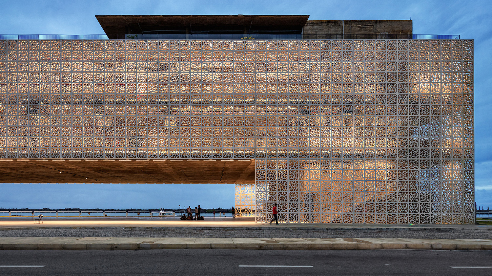
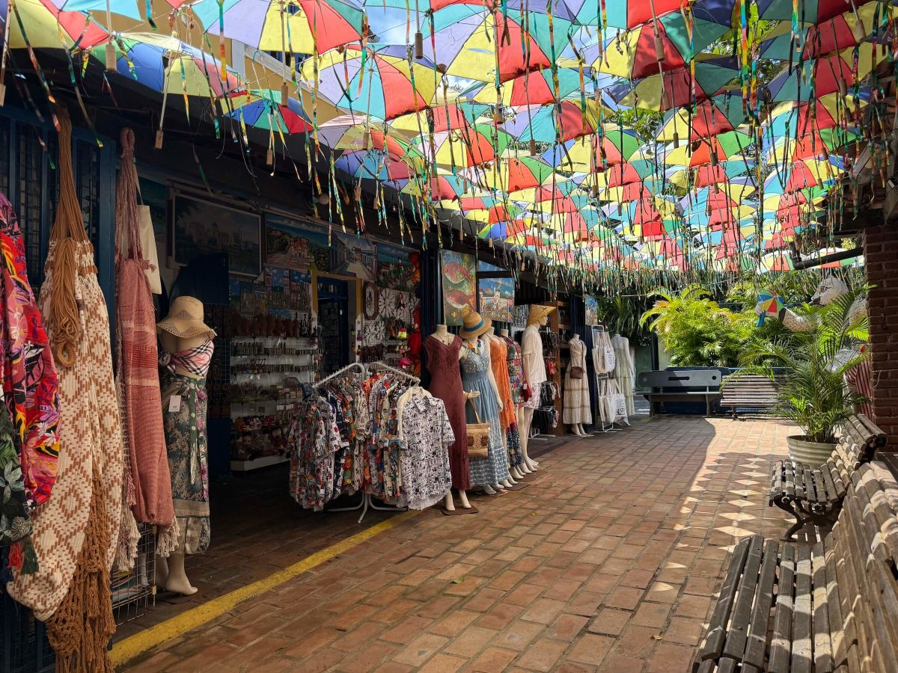

Piso tátil
Verificado
Data de verificação:

O Museu Cais do Sertão é um museu interativo sobre o Sertão e Luiz Gonzaga localizado na cidade do Recife, capital de Pernambuco, Brasil.




| Dia | Abertura | Fechamento |
|---|---|---|
| Segunda-feira | — | — |
| Terça-feira | 10:00 | 16:00 |
| Quarta-feira | 10:00 | 16:00 |
| Quinta-feira | 10:00 | 16:00 |
| Sexta-feira | 10:00 | 16:00 |
| Sábado | 13:00 | 18:00 |
| Domingo | 13:00 | 18:00 |
Telefone: (81) 3429-3169
Terça-feira
Entrada gratuita - aberta ao público
De quarta-feira a Domingo
Inteira: R$ 10,00 | Meia: R$ 5,00
Verificado
Data de verificação:
Verificado
Data de verificação:
Verificado
Data de verificação:
Armazém 10, Av. Alfredo Lisboa, s/n – Recife, PE,
50030-150
Valeu muito a pena a visita, com certeza voltarei.
Com certeza um dos meus pontos turísticos favoritos do Recife

